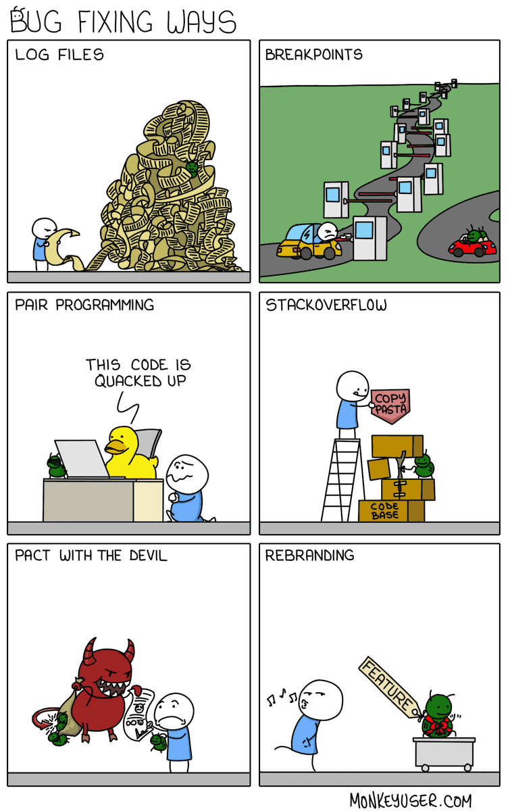

00. Link - Node.js has a built-in debug log method
01. Link - When to use img, img@srcset, and picture and source
02. Link - Practical Ways to Write Better JavaScript
03. Link - Dissecting A Dweet: Mini Black Hole
04. Link - What is Functional Programming? Tutorial with Example
05. Link - Top 10 JavaScript Patterns Every Developer Like
